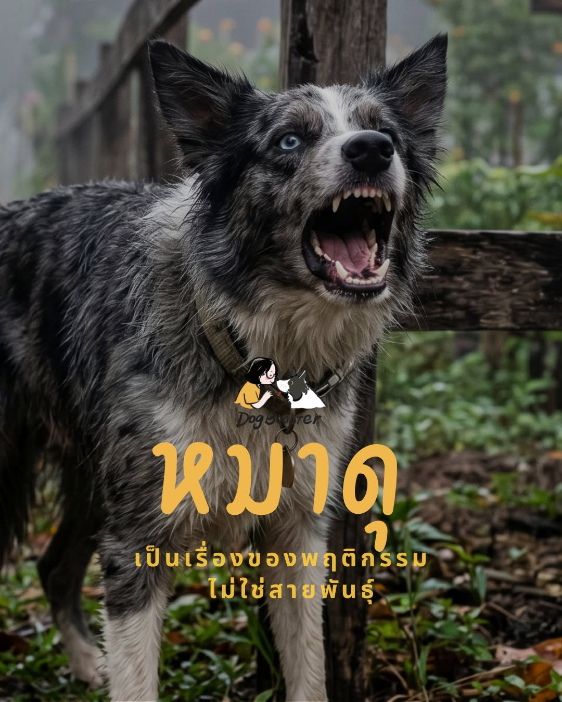

พฤติกรรมทุกอย่างคือ “การเลือก” (Choice) ของสุนัข เพื่อให้ได้ผลลัพธ์ที่ต้องการ หรือเพื่อหลีกเลี่ยงสิ่งที่น่ากลัว
🐶 สุนัขไม่ได้ดุเพราะอยากเป็นหัวโจก แต่เขากำลังใช้ความก้าวร้าวเป็นเครื่องมือในการ “จัดการ” กับสถานการณ์ที่เขาคุมไม่ได้ เช่น การไล่คนแปลกหน้าออกไป หรือการปกป้องทรัพยากร
หากสุนัขเห่าหรือแยกเขี้ยวแล้วสิ่งที่เขาไม่ชอบหายไป (เช่น คนเดินหนี) สมองของเขาจะบันทึกทันทีว่า “วิธีนี้ใช้ได้ผล!” และเขาจะทำมันซ้ำอีกจนกลายเป็นนิสัย
นี่คือหัวใจสำคัญ พฤติกรรมแย่ ๆ หรือความดุร้าย มักเกิดจาก Stress Bucket ที่เต็มจนล้น ในแต่ละวัน สุนัขอาจเจอเรื่องน่ารำคาญเล็ก ๆ น้อย ๆ — เสียงรถ, การถูกดึงปลอกคอ, การเจอหมาตัวอื่น สิ่งเหล่านี้เปรียบเหมือนน้ำที่เติมลงในถัง
เมื่อน้ำล้นถัง สุนัขจะแสดงพฤติกรรม “ดุ” ออกมา (เห่า กัด พุ่งเข้าใส่) ซึ่งนั่นไม่ใช่ตัวตนของเขา แต่มันคือสภาวะที่สมองส่วนเหตุผลหยุดทำงาน และสัญชาตญาณการเอาตัวรอดเข้าแทนที่
สุนัขที่ถูกมองว่าดุ มักจะเป็นสุนัขที่ “คิดก่อนทำไม่เป็น” พฤติกรรมไม่ดีเกิดจากการที่สุนัขไม่มีทักษะในการจัดการกับความตื่นเต้น (Arousal) หรือความกลัว
หากเราไม่ฝึกให้เขารู้จักการเลือกทางออกที่ดีกว่า (เช่น การถอยออกมาแทนการพุ่งเข้าใส่) เขาก็จะกลับไปใช้พฤติกรรมพื้นฐานที่ดูรุนแรง
พฤติกรรม “ดุ” มักเกิดจากความไม่เข้าใจกันระหว่างเจ้าของกับสุนัข หากเจ้าของใช้วิธีการลงโทษ หรือทำให้สุนัขรู้สึกไม่ปลอดภัย ความเชื่อใจจะพังทลาย และสุนัขจะเลือกใช้ “ความดุ” เป็นเกราะป้องกันตัวเองจากเจ้าของหรือโลกภายนอก